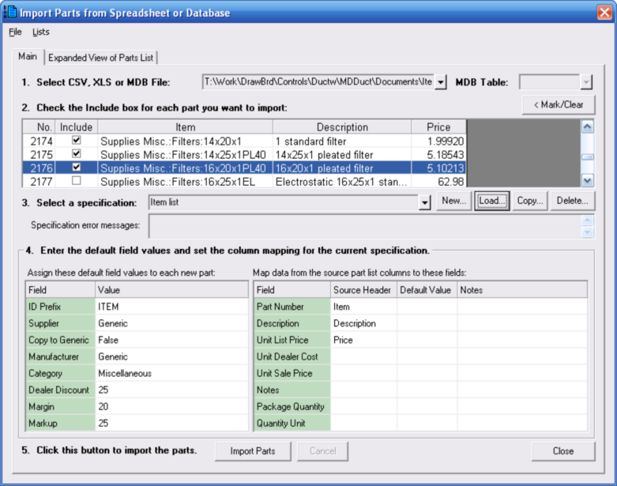

Importing Parts from Spreadsheet or Database Files (Bill of Materials Parts Database Window) |
  
|
Importing Parts from Spreadsheet or Database Files (Bill of Materials Parts Database Window) |
|
You can import lists of parts into your Bill of Materials database if the parts are in CSV (comma separated values), XLS (Microsoft Excel 97 format), or MDB (Microsoft database format, Access 97). To begin, from the Bill of Materials Parts Database window click the menu "File | Import | Import Parts from Spreadsheet or Database File," which will open the dialog pictured below.

1. Select CSV, XLS or MDB File: Click the dropdown help button to the right of this input to open the "Open CSV, XLS or MDB File" dialog. Then select the file you want to open and click Open.
MDB Table: If you selected an MDB file in step 1 use this input to select which table in the database from which you want to import parts.
2. Check the Include box for each part you want to import: Click the "Expanded View of Parts List" tab at the top of this dialog to see more of the list at once.
Mark/Clear: Displays a popup menu that lets you check or uncheck the Include box for multiple parts at once. You can select (highlight in blue) multiple items in the list by holding the Ctrl key down while you click, and you can select several items in a row by holding the Shift key down while you click.
3. Select a specification: A format "specification" is a particular combination of input values that you enter for the two grids in the bottom half of this dialog.
New: If this is the first time you have imported from the file you chose in step 1, click New to create a new, blank format specification. You will be prompted to enter a name for the new format specification.
Load: If you have previously imported from the file you selected in step 1, click Load to load the format specification that you used last time for this file.
Copy: If you want to load a copy of the current format specification and modify the copy without affecting the original format specification, click Copy to copy the current format specification to a new name.
Delete: If you want to delete the current format specification from your list of saved format specifications, click Delete to remove it from the list.
Specification error messages: If you loaded a format specification using the Load button and there were any inconsistencies with it and the file you loaded in step 1, this box will show you a list of the problems that were encountered. Otherwise, this box will be blank.
Enter default field values and set column mapping for the current specification: The values you enter in the two grids at the bottom of this dialog constitute the current format "specification." Any changes you make in these fields is immediately saved in the current format specification. If you want to make any changes that you do not want to be saved in the current format specification click the Copy button to copy the current format specification to a new name.
Assign these default field values to each new part: Set each of these inputs to appropriate values. Each new part added will use the values you enter here.
Map data from the source part list columns to these fields: Set the Source Header column to an appropriate column header from the grid of parts in the top part of this dialog. As each new part is added to the database field values in the new part's record will be assigned based on how you map the columns. You do not have to map each column, but you must at least map either the Part Number field or the Description field.
For any fields that you are not mapping to a column header, you may set the Default Value column to a value that will get assigned to that field for each new part added to the database.
You can enter into the Notes column any text that you want regarding any of the fields, such as a note about the field's mapping or its default value. The text you enter here will be saved with the specification, but is not used anywhere else.
5. Click this button to import the parts (Import Parts): Starts the import process. If you want to stop the process click the Cancel button.
Close: Closes this dialog without making any further changes.